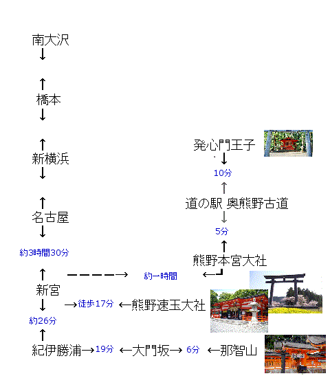
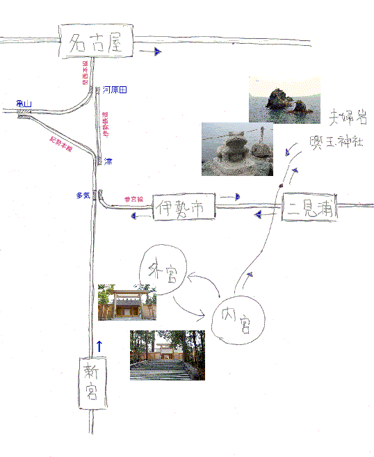

| 乗換 | 出発 | 到着 | 備考 | |
|---|---|---|---|---|
| 南大沢 | ―→ | 橋本 | 京王線 | |
| 14分 | 5:27 | 5分 | 5:32 | ￥143 |
| 橋本 | ―→ | 新横浜 | JR横浜線 | |
| 14分 | 5:46 | 34分 | 6:20 | ￥302(長津田まで) |
| 新横浜 | ―→ | 名古屋 | のぞみ3号 | |
| 15分 | 6:34 | 1時間17分 | 7:51 | 12号車 12-D/E |
| 名古屋 | ―→ | 新宮 | ワイドビュー南紀1号 | |
| 8:05 | 3時間29分 | 11:34 | 3号車 3-A/B | |
| 速玉大社/神倉神社拝観 滞在：2時間04分 | ||||
| 新宮 | ―→ | 紀伊勝浦 | ワイドビュー南紀3号 | |
| 14分 | 13:39 | 17分 | 13:56 | \1,610 |
| 勝浦駅 | ―→ | 大門坂駐車場前 | 熊野交通バス 那智山行き | |
| 14:10 | 19分 | 14:29 | \420 | |
| 那智大社拝観/那智滝 滞在：1時間56分 | ||||
| - | 那智山 | ―→ | 勝浦駅 | 熊野交通バス 勝浦行き |
| 16:25 | 25分 | 16:50 | \620 | |
| 宿泊 浦御苑 | ||||
熊野地域マップ

| |← \1,540 | →｜← | \460 | →| | ||||||
|---|---|---|---|---|---|---|---|---|---|
| 新宮駅 | → | 本宮大社前 | → | 道の駅 奥熊野 | → | 発心王子 | |||
| 05:53 | → | 07:14 | | | 07:30 | → | 07:35 | → | 07:45 | |
| 07:10 | → | 08:11 | | | 08:35 | → | 08:40 | → | 08:50 | |
| 07:46 | → | 09:07 | | | 09:20 | → | 09:25 | → | 09:35 | |
| 08:40 | → | 09:41 | | | 10:10 | → | 10:15 | → | 10:25 | |
| 09:59 | → | 11:20 | | | ||||||
| 10:47 | → | 11:36 | | | 12:00 | → | 12:05 | → | 12:15 | |
| 11:15 | → | 12:16 | | | ||||||
| 11:26 | → | 12:17 | | | ||||||
| 12:15 | → | 13:16 | | | 13:45 | → | 13:50 | → | 14:00 | |
| 13:46 | → | 14:37 | | | 14:45 | → | 14:50 | → | 冬季運休 | |
| |← \1,540 | →｜← | \460 | →| | ||||||
|---|---|---|---|---|---|---|---|---|---|
| 新宮駅 | ← | 本宮大社前 | ← | 道の駅 奥熊野 | ← | 発心王子 | |||
| 12:16 | ← | 11:15 | | | ||||||
| 12:43 | ← | 11:50 | | | ||||||
| 14:21 | ← | 13:20 | | | 12:40 | ← | 12:33 | ← | 12:23 | |
| 15:21 | ← | 14:20 | | | ||||||
| 15:47 | ← | 14:23 | | | ||||||
| 16:12 | ← | 15:20 | | | 15:10 | ← | 15:03 | ← | 14:53 | |
| 17:11 | ← | 16:10 | | | ||||||
| 18:24 | ← | 16:58 | | | ||||||
| 20:22 | ← | 18:58 | | | ||||||
| 新宮 | 紀伊勝浦 | 料金 | ||
|---|---|---|---|---|
| 11:35 | → | 11:56 | \1,610 | ワイドビュー南紀1号 |
| 12:43 | → | 12:58 | \1,610 | くろしお22号 |
| 12:50 | → | 13:16 | \240 | 普通 |
| 13:39 | → | 13:56 | \1,610 | ワイドビュー南紀3号 |
| 14:18 | → | 14:34 | \1,610 | くろしお26号 |
| 14:21 | → | 14:43 | \240 | 普通 |
| 15:40 | → | 15:56 | \1,610 | くろしお30号 |
| 15:46 | → | 16:08 | \240 | 普通 |
| 16:25 | → | 16:42 | \1,610 | ワイドビュー南紀5号 |
| 17:06 | → | 17:37 | \240 | 普通 |
| 17:55 | → | 18:10 | \1,610 | くろしお34号 |
| 18:06 | → | 18:28 | \240 | 普通 |
| 19:07 | → | 19:38 | \240 | 普通 |
| 紀伊勝浦 | 新宮 | 料金 | ||
|---|---|---|---|---|
| 07:18 | → | 07:43 | \240 | 普通 |
| 07:43 | → | 08:07 | \240 | 普通 |
| 08:23 | → | 08:50 | \240 | 普通 |
| 08:43 | → | 09:08 | \240 | 普通 |
| 08:55 | → | 09:12 | \1,610 | ワイドビュー南紀4号 |
| 10:07 | → | 10:40 | \240 | 普通 |
| 11:34 | → | 11:49 | \1,610 | くろしお1号 |
| 12:24 | → | 12:41 | \1,610 | ワイドビュー南紀6号 |
| 12:59 | → | 13:15 | \1,610 | くろしお3号 |
| 13:26 | → | 13:51 | \240 | 普通 |
| 15:03 | → | 15:20 | \1,610 | くろしお9号 |
| 15:35 | → | 16:11 | \240 | 普通 |
| 17:03 | → | 17:19 | \1,610 | くろしお13号 |
| |← \420 | →| | |||||
|---|---|---|---|---|---|---|
| |← \620 （往復券：\1,000） | →| | |||||
| 紀伊勝浦 | → | 大門坂 | → | 那智の滝 | → | 那智山 |
| 06:45 | → | 07:04 | → | 07:09 | → | 07:10 |
| 07:25 | → | 07:44 | → | 07:49 | → | 07:50 |
| 08:25 | → | 08:44 | → | 08:49 | → | 08:50 |
| 08:55 | → | 09:14 | → | 09:19 | → | 09:20 |
| 09:30 | → | 09:49 | → | 09:54 | → | 09:55 |
| 10:25 | → | 10:44 | → | 10:49 | → | 10:50 |
| 11:05 | → | 11:24 | → | 11:29 | → | 11:30 |
| 12:10 | → | 12:29 | → | 12:34 | → | 12:35 |
| 12:10 | → | 13:29 | → | 13:34 | → | 13:35 |
| 14:10 | → | 14:29 | → | 14:34 | → | 14:35 |
| 15:10 | → | 15:29 | → | 15:34 | → | 15:35 |
| 15:45 | → | 16:04 | → | 16:09 | → | 16:10 |
| |← \420 | →| | |||||
|---|---|---|---|---|---|---|
| |← \620 （往復券：\1,000） | →| | |||||
| 那智山 | → | 那智の滝 | → | 大門坂 | → | 紀伊勝浦 |
| 07:58 | → | 07:59 | → | 08:04 | → | 08:23 |
| 09:10 | → | 09:11 | → | 09:16 | → | 09:35 |
| 09:40 | → | 09:41 | → | 09:46 | → | 10:05 |
| 10:10 | → | 10:11 | → | 10:16 | → | 10:35 |
| 11:05 | → | 11:06 | → | 11:11 | → | 11:30 |
| 11:45 | → | 11:46 | → | 11:51 | → | 12:10 |
| 13:00 | → | 13:01 | → | 13:06 | → | 13:25 |
| 13:55 | → | 13:56 | → | 14:01 | → | 14:20 |
| 14:55 | → | 14:56 | → | 15:01 | → | 15:20 |
| 15:50 | → | 15:51 | → | 15:56 | → | 16:15 |
| 16:25 | → | 16:26 | → | 16:31 | → | 16:50 |
| 17:10 | → | 17:11 | → | 17:16 | → | 17:35 |
| 17:40 | → | 17:41 | → | 17:46 | → | 18:05 |
| 乗換 | 出発 | 到着 | 備考 | |
|---|---|---|---|---|
| 紀伊勝浦 | ―→ | 新宮 | 紀勢本線 普通 | |
| 33分 | 7:43 | 24分 | 8:07 | ￥240 |
| 新宮駅 | ―→ | 本宮大社前 | 熊野交通バス 本宮大社行き | |
| 8:40 | 1時間01分 | 9:41 | ￥1,540 | |
| 本宮大社拝観 滞在：1時間34分 | ||||
| 本宮大社前 | ―→ | 新宮駅 | 熊野交通バス 勝浦駅行き | |
| 28分 | 11:50 | 1時間01分 | 12:16 | ￥1,540 |
| 新宮 | ―→ | 多気 | ワイドビュー南紀6号 | |
| 12分 | 12:44 | 2時間03分 | 14:47 | 自由席特急券 ￥1,830 指定席特急券 ￥2,550 |
| 多気 | ―→ | 伊勢市 | 快速みえ11号 | |
| 14:59 | 12分 | 15:11 | 新宮から￥4,420(自由) 新宮から￥5,140(指定) | |
| チェックイン 伊勢神泉 | ||||
| 伊勢神宮 外宮 および付近の散策 | ||||
| 乗換 | 出発 | 到着 | 備考 | |
|---|---|---|---|---|
| 6:00 ～ 7:00 早朝の散歩 滞在：1時間 | ||||
| 伊勢市駅前 | ―→ | 内宮前 | 三重交通バス | |
| 8:04 | 18m | 8:22 | ￥430 | |
| 8:30 ～ 12:30 内宮拝観 おかげ横丁の散策 滞在：4時間 | ||||
| 内宮前 | ―→ | 夫婦岩東口 | 三重交通バス 鳥羽水族館・ミキモト真珠島 | |
| 12:51 | 26m | 13:17 | ￥690 | |
| 13:20 ～ 14:40 二見輿玉神社 夫婦岩 滞在：1時間20分 | ||||
| 二見輿玉神社 | ―→ | 二見浦 | 徒歩 | |
| 14:40 | 25m | 15:05 | ￥0 (バスだと\180) | |
| 二見浦 | ―→ | 名古屋 | 快速みえ18号 | |
| 15分 | 15:06 | 2h 01m | 17:07 | 1号車 5-A/B |
| 名古屋 | ―→ | 新横浜 | のぞみ176号 | |
| 17:22 | 1h 22m | 18:44 | 5号車 7-D/E | |
伊勢地域マップ

| 内宮前 | 夫婦岩東口 | |
| 9:30 | → | 9:56 |
| 9:48 | → | 10:14 |
| 10:51 | → | 11:17 |
| 11:51 | → | 12:17 |
| 12:20 | → | 12:46 |
| 12:51 | → | 13:17 |
| 13:51 | → | 14:17 |
| 14:20 | → | 14:46 |
| 二見浦表参道 | 夫婦岩東口 | |
| 10:10 | → | 10:14 |
| 10:15 | → | 10:19 |
| 10:22 | → | 10:26 |
| 11:13 | → | 11:17 |
| 12:13 | → | 12:17 |
| 12:42 | → | 12:46 |
| 13:13 | → | 13:17 |
| 14:00 | → | 14:04 |
| 14:13 | → | 14:17 |
| 夫婦岩東口 | 二見浦表参道 | |
| 12:12 | → | 12:16 |
| 13:07 | → | 13:11 |
| 13:37 | → | 13:41 |
| 14:07 | → | 14:11 |
| 14:20 | → | 14:24 |
| 15:07 | → | 15:11 |
| 紀伊勝浦 | 新宮 | 多気 | 伊勢市 | 料金 | 始発 |
|---|---|---|---|---|---|
| 07:18 | 07:47 | 11:07-11:33 | 11:53 | \5,460 | 紀伊勝浦 |
| 08:55 | 09:13 | 11:16-11:33 | 11:53 | \5,460 | 紀伊勝浦 |
| 10:07 | 10:52 | 14:10-14:35 | 14:56 | \2,590 | 新宮 |
| 12:24 | 12:44 | 14:47-14:59 | 15:11 | \5,460 | 紀伊勝浦 |
| 13:22 | 17:28-17:40 | 18:03 | \2,590 | 新宮 | |
| 13:22 | (バス＆近鉄） | 17:30 | \3,500 | 新宮 | |
| 15:30 | 18:37-18:42 | 19:04 | \2,590 | 新宮 | |
| 16:13 | 19:20-19:48 | 20:11 | \2,590 | 新宮 | |
| 17:30 | (松坂から近鉄) | 19:55 | \5,850 | 紀伊勝浦 | |
| 17:30 | 19:30-19:48 | 20:11 | \2,590 | 紀伊勝浦 |
{kind=link}